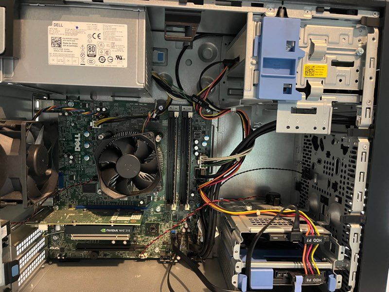
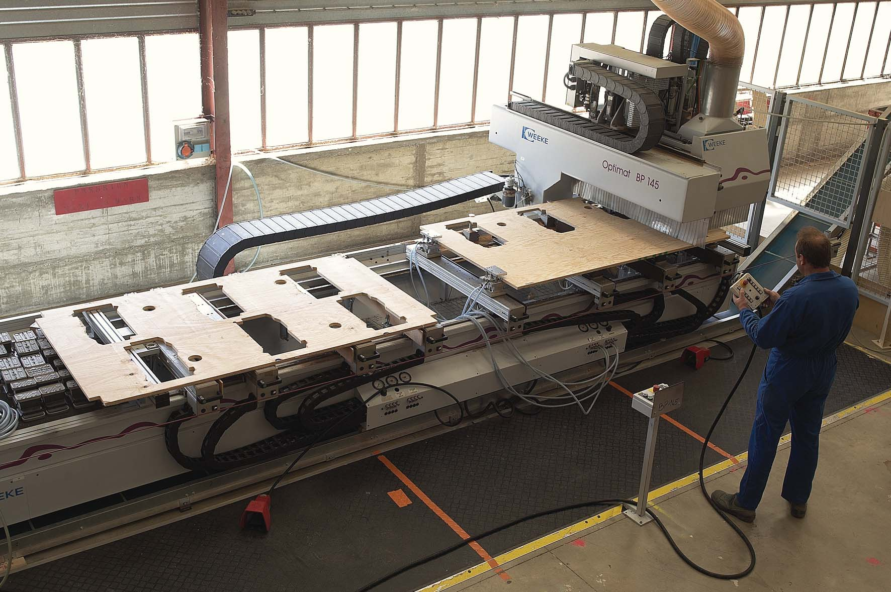

Stage avec une coordinatrice informatique de 6 semaines :
Assistant support dépannage des systèmes et réseaux de l'entreprise. Changé l'équipement, changement d'environnement de travail,
apporté moon aide aux employés,
Changement d'environnement -> passer de virtuel à local.
Trouver de nouvelles solutions de sécurité.
Stage en informatique d'une semaine:
Monter + mise en place de nouveaux postes de travail pour
renouveler des ordinateurs obsolètes.

Stage en comptabilité d'une semaine :
Assistant comptable où je devais faire des devis, vérifier les stocks, aller voir des clients pour les problèmes.
signalés.

Job étudiant en usine sur machine de deux mois :
Assistant numérique où je configurais un programme que les machines doivent executer pour créer des panneaux
ou pièces en bois pour d'autres entreprises comme Renault.
